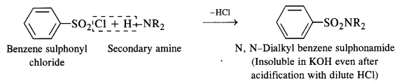
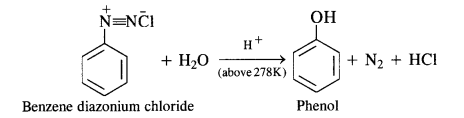
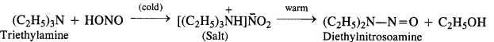

NCERT Solutions For Class 12 Chemistry Chapter 13 Amines
Topics and Subtopics in NCERT Solutions for Class 12 Chemistry Chapter 13 Amines:
| Section Name | Topic Name |
| 13 | Amines |
| 13.1 | Structure of Amines |
| 13.2 | Classification |
| 13.3 | Nomenclature |
| 13.4 | Preparation of Amines |
| 13.5 | Physical Properties |
| 13.6 | Chemical Reactions |
| 13.7 | Method of Preparation of Diazonium Salts |
| 13.8 | Physical Properties |
| 13.9 | Chemical Reactions |
| 13.10 | Importance of Diazonium Salts in Synthesis of Aromatic Compounds |
NCERT INTEXT QUESTIONS
13.1. Classify the following amines as primary, secondary and tertiary:
Ans: (i) 1° (ii) -3° (iii) 1° (iv) 2°
13.2. Write the structures of different isomeric amines corresponding to the molecular formula, C4H11N.
(i) Write the IUPAC names of all the isomers
(ii) What type of isomerism is exhibited by different types of amines?
Ans: Eight isomeric amines are possible
Isomerism exhibited by different amines
- Chain isomers: (i) and (ii) ; (iii) and (iv) ; (i) and (iv)
- Position isomers: (ii) and (iii) ; (ii) and (iv)
- Metamers: (v) and (vi) ; (vii) and (viii)
- Functional isomers: All the three types of amines are the functional isomers of each other.
13.3. How will you convert:
(i) Benzene into aniline
(ii) Benzene into N,N-dimethylaniline
(iii) Cl-(CH2)4-Cl into Hexane -1,6- diamine
Ans:
13.4. Arrange the following in increasing order of their basic strength :
(i) C2H5NH2, C6H5NH2, NH3, C6H5CH2NH2, (C2H5)2NH
(ii) C2H5NH2, (C2H5)2NH, (C2H5)3N, C6H5NH2
(iii) CH3NH2, (CH3)2NH, (CH3)3N, C6HsNH2, C6H5CH2NH2
Ans:
In general, the basic character of ammonia (NH3) and the amines is linked with the availability of the lone electrons pair on the nitrogen atom. In other words, these are all Lewis bases.
Amines act as Lewis bases due to the presence of lone electron paîr on the nitrogen atom. Since the nitrogen atom is sp³ hybridised, its electron attracting tendency is considerably reduced. It can readily lose its electron pair and acts as a base. For example, amines form hydroxides with water.
Here Kt is called dissociation constant for the base. Greater the Kb value stronger will be the base. The basic strength
of amines can also be expressed as pKb value which is related to Kb as :
The Kb values are :

13.5. Complete the following acid-base reactions and name the products:
(i) CH3CH2CH2NH2+HCl ——–>
(ii) (C2H5)3 N+HCl ——–>
Ans:

13.6. Write reactions of the final alkylation product of aniline with excess of methyl iodide in the presence of sodium carbonate solution.
Ans:
13.7. Write chemical reaction of aniline with benzoyl chloride and write the name of the product obtained.
Ans:
13.8. Write structures of different isomers corresponding to the molecular formula, C3H9N. Write IUPAC names of the isomers which will liberated N2 gas on treatment with nitrons acid.
Ans: In ‘all, four structural isomers are possible. These are:
13.9. Convert:
(i) 3-Methylanilineinto3-nitrotoluene
(ii) Aniline into 1,3,5- Tribromo benzene
Ans:
NCERT EXRECISES
13.1. Write IUPAC names of the following compounds and classify them into primary, secondary, and tertiary amines.
(i) (CH3)2 CHNH2 (ii) CH3(CH2)2NH2 (iii) CH3NHCH(CH3)2
(iv) (CH3)3 CNH2 (v) C6H5NHCH3(vi) (CH3CH2)2NCH3
(vii)m-BrC6H4NH2
Ans: (i) Propan-2-amine(1°)
(ii) Propan-1-amine (1°),
(iii) N-Methylpropan-2-amine (2°).
(iv) 2-Methylpropan-2-amine(l°)
(v) N-MethylbenzenamineorN-methylaniline(2°)
(vi) N-Ethyl-N-methylethanamine (3°)
(vii) 3-Bromobenzenamine or 3-bromoaniline (1°)
13.2. Give one chemical test to distinguish between the following pairs of compounds:
(i)Methylamine and dimethylamine
(ii) Secondary and tertiary amines
(iii) Ethylamine and aniline
(iv) Aniline and benzylamine
(v) Aniline and N-Methylaniline.
Ans:
13.3. Account for the following
(i) pKb of aniline is more than that of methylamine
(ii) Ethylamine is soluble in water whereas aniline is not.
(iii) Methylamine in water reacts with ferric chloride to precipitate hydrated ferric oxide.
(iv) Although amino group is o and p – directing in aromatic electrophilic substitution reactions, aniline on nitration gives a substantial amount of m-nitroaniline.
(v) Aniline does not undergo Friedel-Crafts reaction.
(vi) Diazonium salts of aromatic amines are more stable than those of aliphatic amines.
(vii) Gabriel phthalimide synthesis is preferred for synthesising primary amines.
Ans: (i) In aniline, the lone pair of electrons on the N-atom is delocalised over the benzene ring.
As a result, electron density on the nitrogen . atom decreases. Whereas in CH3NH2,+ I-effect of -CH3 group increases the electron density on the N-atom. Therefore, aniline is a weaker base than methylamine and hence its pKb value is higher than that of methylamine.
(ii) Ethylamine dissolves in water due to intermolecular H-bonding. However, in case of aniline, due to the large hydrophobic part, i.e., hydrocarbon part, the extent of H-bonding is very less therefore aniline is insoluble in water.
(iii) Methylamine being more basic than water, accepts a proton from water liberating OH– ions,
(iv) Nitration is usually carried out with a mixture of cone HNO3 + cone H2SO4. In presence of these acids, most of aniline gets protonated to form ahilinium ion. Therefore, in presence of acids, the reaction mixture consist of aniline and anilinium ion. Now, -NH2 group in aniline is activating and o, p-directing while the -+NH3 group in anilinium ion is deactivating and rw-directing: Nitration of aniline (due to steric hindrance at o-position) mainly gives p-nitroaniline, the nitration of anilinium ion gives m-nitroaniline. In actual practice, approx a 1:1 mixture of p-nitroaniline and m-nitroaniline is obtained. Thus, nitration of aniline gives a substantial amount of m-nitroaniline due to protonation of the amino group.
13.4. Arrange the following:
(i) In decreasing order of pKb values:
C2H5NH2,C6H5NHCH3,(C2H5)2NH and C6H5NH2
(ii) In increasing order of basic strength:
C6H5NH2, C6H5N(CH3)2, (C2H5)2 NH and CH3NH2.
(iii) In increasing order of basic strength:
(а)Aniline,p-nitroaniline andp-toluidine
(b)C6H5NH2, C6H5NHCH3, C6H5CH2NH2
(iv) In decreasing order of basic strength in gas phase:
C2H5NH2, (C2H5)2NH, (C2H5)3N and NH3
(v) In increasing order of boiling point:
C2H5OH, (CH3)2NH, C2H5NH2
(vi) In increasing order of solubility in water:
C6H5NH2,(C2H5)2NH,C2H5NH2
Ans: (i) Due to delocalisation of lone pair of electrons of the N-atom over the benzene ring,C6H5NH2 and C6H5NHCH3 are far less basic than C2H5NH2 and (C2H,)2NH. Due to +I-effect of the -CH3 group, C6H5NHCH3 is little more basic that C6H5NH2. Among C2H5NH2 and (C2H5)2NH, (C2H5)2NH is more basic than C2H5NH2 due to greater+I-effect of two -C2H5 groups. Therefore correct order of decreasing pKb values is:
(ii) Among CH3NH2 and (C2H5)2NH, primarily due to the greater +I-effect of the two -C2H5 groups over one -CH3 group, (C2H5)2NH is more basic than CH3NH2.In both C6H5NH2 and C6H5N(CH3)2 lone pair of electrons present on N-atom is delocalized over the benzene ring but C6H5N(CH3)2 is more basic due to +1 effect of two-CH3 groups.
(iii) (a) The presence of electron donating -CH3 group increases while the presence of electron withdrawing -NO2 group decreases the basic strength of amines.
(b) In C6H5NH2 and C6H5NHCH3, N is directly attached to the benzene ring. As a result, the lone pair of electrons on the N-atom is delocalised over the benzene ring. Therefore, both C6H5NH2 and C6H5NHCH3 are weaker base in comparison to C6H5CH2NH2. Among C6H5NH2 and C6H5NHCH3, due to +1 effect of-CH3 group C6H5NHCH3 is more basic.
(iv) In gas phase or in non-aqueous solvents such as chlorobenzene etc, the solvation effects i. e., the stabilization of the conjugate acid due to H-bonding are absent. Therefore, basic strength depends only upon the +I-effect of the alkyl groups. The +I-effect increases with increase in number of alkyl groups.Thus correct order of decreasing basic strength in gas phase is,
(v) Since the electronegativity of O is higher than thalof N, therefore, alcohols form stronger H-bonds than amines. Also, the extent of H-bonding depends upon flie number of H-atoms on the N-atom, thus the extent of H-bonding is greater in primary amine than secondary amine.
(vi) Solubility decreases with increase in molecular mass of amines due to increase in the size of the hydrophobic hydrocarbon part and with decrease is the number of H-atoms on the N-atom which undergo H-bonding.
13.5. How will you convert:
(i) Ethanoic acid into methanamine
(ii) Hexanenitrile into 1-aminopentane
(iii) Methanol to ethanoic acid.
(iv) Ethanamine into methanamine
(v) Ethanoic acid into propanoic acid
(vi) Methanamine into ethanamine
(vii) Nitromethane into dimethylamine
(viii) Propanoic acid into ethanoic acid?
Ans:
13.6. Describe the method for the identification of primary, secondary and tertiary amines. Also write chemical equations of the reactions involved.
Answer:
The distinction in the three types of amines can be done by the following methods :
(i) Hinsberg’s Test:
This is a very useful test for the distinction of primary, secondary and tertiary amines. An amine is shaken with
Hinsberg’s reagent (benzene suiphonyl chloride) in the presence of excess of aqueous KOH solution. The reactions taking
place are given on the next page.
- A primary amine forms N – alkyl benzene suiphonamide which dissolves in aqueous KOH solution to form potassium salt and upon acidification with dilute HCI regenerates the insoluble suiphonamide.

- A secondary amine forms N, N – dialkylbenzene suiphonamide which remains insoluble in aqueous KOH and even after acidification with dilute HCl
 - A tertiary amine does not react with benzene suiphonyl chloride and remains insoluble in aqueous KOH.
However, on acidification with dilute HCI it gives a clear solution due to the formation of the ammonium salt.
(ii) Reaction with nitrous acid:
All the three types of amines, aliphatic as well as aromatic, react with nitrous acid under different conditions to form variety of products. Since nitrous acid is highly unstable, it is prepared in situ by the action of dilute hydrochloric acid on sodium nitrite.
(a) Primary aliphatic amines react with nitrous acid at low temperature (cold conditions) to form primary alcohol and
nitrogen gas accompanied by brisk effervescence. Nitrous acid is unstable in nature and is prepared in situ by reacting sodium
nitrite with dilute hydrochloric acid. For example,
The reaction is used as a tesijôr primary aliphadc amines as no other amine evolves nitrogen with nurous acid.
(b) Primary aromatic amines such as aniline react with nitrous acid under ice cold conditions (273 – 278 K) to form benzen diazonium salt. The reaction is known as diazotisation reaction.
in case, the temperature is allowed to rise above 278 K, benzene diazortium chloride is decomposed by water to form phenol.

Aliphatic primary amines also react with nitrous acid to form alkyl diazonium salts in a similar manner. But these are
quite unstable and decompose to form a mixture of alcohols, alkenes and alkyl halides along with the evolution of N2 gas.
(c) Secondary amines (both aliphatic and aromatic) react with nitrous acid to form nitrosoamines which separate as
Yellow oily liquids.
(d) Tertiary aliphatic amines dissolve in a cold solution of nitrous acid to form salts which decompose on warming to
give nitrosoamine and alcohol. For example,

(e) Tertiary aromatic amines react with nitrous acid to give a coloured nitrosoderivative. This reaction is called
nitrosation and as a result, a hydrogen atom in the para position gets replaced by a nitroso (-NO) group. For example,
13.7. Write short notes on the following:
(i) Carbylamine reaction
(ii) Diazotisation
(iii) ‘Hofmann’s bromamide reaction
(iv) Coupling reaction
(v) Ammonolysis
(vi) Acetylation
(vii) Gabriel phthalimide synthesis
Ans: (i) Carbylamine reaction: Both aliphatic and aromatic primary amines when warmed with chloroform and an alcoholic solution of KOH, produces isocyanides or carbylamines which have very unpleasant odours. This reaction is called carbylamine reaction.
(ii) Diazotisation: The process of conversion of a primary aromatic amino compound into a diazonium salt, is known as diazotisation. This process is carried out by adding an aqueous solution of sodium nitrite to a solution of primary aromatic amine (e.g., aniline) in excess of HCl at a temperature below 5°C.
(iii) Hoffmann’s bromamide reaction: When an amide is treated with bromine in alkali solution, it is converted to a primary amine that has one carbon atom less than the starting amide. This reaction is known as Hoffinann’s bromamide degradation reaction.
(iv) Coupling reaction: In this reaction, arene diazonium salt reacts with aromatic amino compound (in acidic medium) or a phenol (in alkaline medium) to form brightly coloured azo compounds. The reaction generally takes place at para position to the hydroxy or amino group. If para position is blocked, it occurs at ortho position and if both ortho and para positions are occupied, than no coupling takes place.
(v) Ammonolysis: It is a process of replacement of either halogen atom in alkyl halides (or aryl halides) or hydroxyl group in alcohols (or phenols) by amino group. The reagent used for ammonolysis is alcoholic ammonia. Generally, a mixture of primary, secondary and tertiary amine is formed.

(vi) Acetylation: The process of introducing an acetyl (CH3CO-) group into molecule using acetyl chloride or acetic anhydride is called acetylation.
(vii) Gabriel phthalimide synthesis: It is a method of preparation of pure aliphatic and aralkyl primary amines. Phthalimide on treatment with ethanolic KOH gives potassium phathalimide which on heating with a suitable alkyl Or aralkyl halides gives N-substituted phthalimides, which on hydrolysis with dil HCI or with alkali give primary amines.
13.8. Accomplish the following conversions:
(i) Nitrobenzene to benzoic acid
(ii) Benzene to m-bromophenol
(iii) Benzoic acid to aniline
(iv) Aniline to 2,4,6-tribromofluorobenzene
(v) Benzyl chloride to 2-phenylethanamine
(vi) Chlorobenzene to p-Chloroaniline
(vii) Aniline to p-bromoaniIine
(viii)Benzamide to toluene
(ix) Aniline to benzyl alcohol.
Ans:
13.9. Give the structures of A,B and C in the following reaction:
Ans:
13.10. An aromatic compound ‘A’ on treatment with aqueous ammonia and heating forms compound ‘B’ which on heating with Br2 and KOH forms a compound ‘C’ of molecular formula C6H7N. Write the structures and IUPAC names of compounds A, B and C.
Ans:
From the available information, we find that ‘B’ upon heating with Br2 and KOH forms a compound ‘C’. The compound ‘B’ is
expected to be an acid amide. Since ‘B’ has been formed upon heating compound ‘A’ with aqueous ammonia, the compound ‘A’ is an aromatic acid.
It is benzoic acid. The reactions involved are given as follows:
13.11. Complete the following reactions:
Ans:
13.12. Why cannot aromatic primary amines be prepared by Gabriel phthalimide synthesis?
Ans: The success of Gabriel phthalimide reaction depends upon the nucleophilic attack by the phthalimide anion on the organic halogen compound.
Since aryl halides do not undergo nucleophilic substitution reactions easily, therefore, arylamines, i.e., aromatic, primary amines cannot be prepared by Gabriel phthalimide reaction.
13.13. Write the reactions of (i) aromatic and (ii) aliphatic primary amines with nitrous acid.
Ans: Both aromatic and aliphatic primary amines react with HNO2 at 273-278 K to form aromatic and aliphatic diazonium salts respectively. But aliphatic diazonium salts are unstable even at this low temperature and thus decompose readily to form a mixture of compounds. Aromatic and aliphatic primary amines react with
13.14. Give plausible explanation for each of the following:
(i) Why are amines less acidic than alcohols of comparable molecular masses?
(ii) Why do primary amines have higher boiling point than tertiary amines?
(iii) Why are aliphatic amines stronger bases than aromatic amines?
Ans: (i) Loss of proton from an amine gives an amide ion while loss of a proton from alcohol give an alkoxide ion.
R—NH2—>R—NH– +H+
R—O —H—>R— O– +H+ .
Since O is more electronegative than N, so it wijl attract positive species more strongly in comparison to N. Thus, RO~ is more stable than RNH®. Thus, alcohols are more acidic than amines. Conversely, amines are less acidic than alcohols.
(ii) Due to the presence of two H-atoms on N-atom of primary amines, they undergo extensive intermolecular H-bonding while tertiary amines due to the absence of H-atom on the N-atom do not undergo H-bonding. As a result, primary amines have higher boiling points than tertiary amines of comparable molecular mass.
(iii) Aromatic amines are far less basic than ammonia and aliphatic amines because of following reasons:
(a) Due to resonance in aniline and other aromatic amines, the lone pair of electrons on the nitrogen atom gets delocalised over the benzene ring and thus it is less easily available for protonation. Therefore, aromatic amines are weaker bases than ammonia and aliphatic amines.
(b) Aromatic amines arS more stable than corresponding protonated ion; Hence, they hag very less tendency to combine with a proton to form corresponding protonated ion, and thus they are less basic.
More Resources for CBSE Class 12: